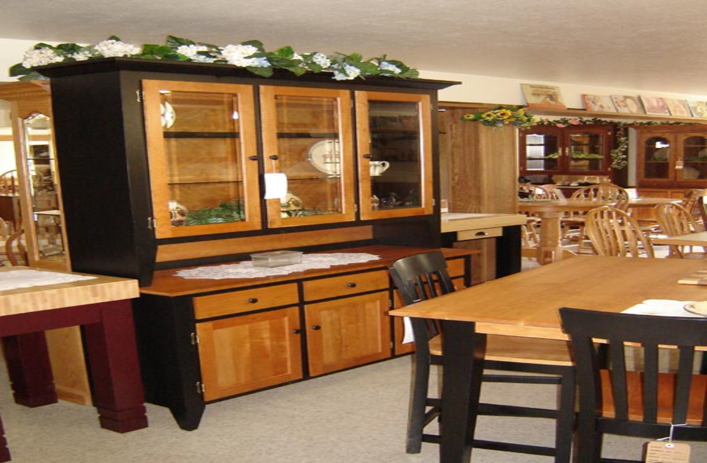

While working for Joga Nexus, I conducted an in-depth financial analysis that revealed both strengths and challenges.
The company maintained strong gross margins thanks to its sustainable sourcing practices and a streamlined production process,
yet faced cash flow constraints due to limited funding. I also observed that online sales showed promising growth, bolstered by a niche audience for eco-friendly fashion.
Overall, Joga Nexus balanced creative vision and operational discipline, with opportunities to expand through targeted marketing and strategic partnerships.
My analysis underscored the need for careful cash flow management to support continued growth in this dynamic industry. Tool used was Excel
I found that the company’s customers are typically young, environmentally conscious individuals who value sustainability and ethical production.
They’re drawn to the brand’s unique blend of cultural storytelling and eco-friendly practices, often seeking out limited-run pieces that highlight personal style.
Many customers discovered Joga Nexus through word-of-mouth and social media, underscoring the importance of digital engagement. While the customer base is niche,
their loyalty and willingness to pay a premium for quality and sustainability are key strengths. My analysis highlighted the importance of community-building and transparency
in cultivating deeper customer relationships. Tool used SQL
Cafe Harmony is a new and exciting virtual café chain! The café specializes in offering a variety of drinks, snacks, and light meals to customers.
Over the past year, Café Harmony has seen impressive growth but now faces new challenges as the company is scaling to meet customer demand. The café has
multiple locations across the city, each with its own performance metrics and unique customer preferences. Café Harmony has grown rapidly and now faces the challenge of improving its
overall operational efficiency and customer experience. The company needs to identify the following key business questions: Which menu items are performing the best across different locations?,
What is the customer profile that tends to spend the most (age, gender, or preferred product)?, How can the café improve its stock management to avoid running out of popular items while also reducing overstock?,
Are there any locations or employee performance issues that require attention?. Tool used Excel.

Aurora Threads Boutique is a fashion-forward retail brand offering a diverse range of apparel and accessories across three store locations. With a total revenue of $288.46K generated from 771 items sold, the boutique demonstrates strong market performance and customer engagement. The product lineup includes accessories, clothing, and footwear, with accessories driving the highest revenue at $148K. Top-performing individual products include handbags, necklaces, and sunglasses, contributing significantly to overall sales.
Aurora Threads serves a diverse customer base, with products tailored to unisex (42%), female (35%), and male (23%) categories. The boutique supports multiple payment methods, with cash (31%), online payments (30%), and credit card (25%) being the most used.
Customer engagement remains high, with 31 unique customers driving consistent daily revenue, peaking on certain days up to $22K. The brand’s success reflects a balanced product mix, digital payment adoption, and gender-inclusive offerings—positioning Aurora Threads as a modern boutique retailer with strong growth potential. Tool used Power BI
Dreamy Bites is a high-performing baked goods brand specializing in a select range of cookie products. Operating with a streamlined customer base of five key clients, the company generated an impressive $2.72 million in total profit from 700 orders, achieving a 58% profit margin over the analysis period.
With over 1.13 million units sold, Dreamy Bites’ top-selling client, ACME Bites, contributed 330K units across 206 orders, while Chocolate Chip cookies stood out as the leading product, earning over $1 million in profit. The business managed expenses efficiently, totaling $1.97 million, resulting in strong profitability across all major customers and product categories.
Operations span multiple U.S. states, with regional profit distribution mapped out to support strategic growth decisions. Monthly performance trends highlight peak periods in July and September 2020, with revenue surges reaching $247K and $252K, respectively.
Dreamy Bites’ data-driven approach reveals a well-balanced product mix and customer portfolio, positioning the brand as a scalable, high-margin business in the specialty baked goods industry. Tool used Power BI.

Deskify Office Supplies is a data-driven office products supplier serving a diverse customer base across the United States and Canada. Between 2009 and 2012, Deskify generated $14.7 million in revenue and achieved a total profit of $1.5 million from over 5,000 orders, maintaining a healthy profit margin of 10.33%. The company specializes in three major product categories—Office Supplies, Furniture, and Technology—with Office Supplies contributing 65% of total profits. Popular high-performing items include binders, paper, and furnishings. Deskify's top customers span Corporate, Home Office, Consumer, and Small Business segments, with Corporate clients delivering the highest profit share.
Deskify leverages data analytics to optimize shipping modes (primarily Regular Air), product offerings, and customer relationships. Its customer-centric approach, supported by strategic regional insights, drives growth and informs operational decisions. Tool used Power BI.

Novamed solutions, a leading pharmaceutical distributor, is facing challenges in
optimizing sales performance, managing inventory efficiently, and identifying key market
opportunities. The company serves a diverse healthcare sector, ensuring the availability of
essential medications. However, inefficiencies in demand forecasting, stock
management, and customer engagement strategies have impacted operational
effectiveness. Over the past year, novamed solutions has collected comprehensive sales
data, including revenue, profit margins, drug performance, and customer demographics.
This dataset provides a valuable opportunity for in-depth analysis, trend identification,
and data-driven decision-making to enhance business strategies and streamline
operations. Tool used Power BI.

I performed a detailed data analysis that uncovered key business trends.
My findings showed that demand for inks and printing machines remained steady, with a notable uptick in specialized printing equipment.
However, sales data revealed inefficiencies in inventory turnover and frequent stockouts on popular items.
Customer purchasing patterns highlighted the need for tailored marketing and better after-sales support.
I recommended implementing data-driven demand forecasting and refining stock management practices to improve order fulfillment and customer satisfaction.
Overall, my analysis provided City Arrow with actionable insights for growth and profitability.

During my customer analysis for Beaded by Awura, a fashion brand known for its exquisite crystal beading, I found a passionate clientele driven by a love for unique, luxury detailing.
The brand appeals strongly to fashion-forward women seeking statement pieces for special occasions.
My analysis revealed that repeat customers value personalized service and the craftsmanship that distinguishes Beaded by Awura’s creations. While the niche is small, the brand’s attention to quality and customization fuels strong word-of-mouth referrals.
I recommended amplifying social media engagement and tailored consultations to deepen customer relationships and maximize loyalty within this exclusive, discerning audience.

an emerging security company founded in 2015, I discovered that its customer base consists primarily of small and medium businesses,
along with residential clients seeking affordable, reliable CCTV solutions.
My analysis highlighted a growing trust in Menatech’s services, driven by word-of-mouth and competitive pricing.
However, customer data also revealed a need for more tailored solutions to address the unique security concerns of each client segment.
I recommended enhancing customer profiling and follow-up services to foster deeper loyalty and unlock cross-selling opportunities. Overall,
Menatech’s adaptability and personalized approach position it for sustained growth.

I discovered how its dual focus on wholesale and retail across the USA and UK created a unique advantage.
My review of operational data highlighted efficient supply chains and consistent revenue streams from wholesale orders,
but I also noted thin margins in the competitive retail segment.
Customer data showed strong demand for ethnic groceries, presenting a niche opportunity.
I recommended leveraging digital marketing and refining inventory management to boost profitability.
Overall, my analysis revealed that Reggieo Enterprise is well-positioned for growth by deepening customer relationships and optimizing cross-border operations.